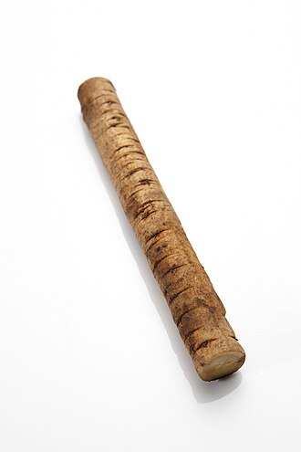

ごぼうの生産量 都道府県ランキング
全8都道府県の順位と収穫量
ごぼうの収穫量が全国で最も多いのは青森県で、4万6,700 tです。全国（11万7,100 t）の40%を占めます。

| 順位 | 都道府県 | 収穫量 | 全国に占める割合 |
|---|---|---|---|
| 1位 | 青森県 | 4万6,700 t | 40% |
| 2位 | 茨城県 | 1万2,900 t | 11% |
| 3位 | 北海道 | 9,970 t | 8.5% |
| 4位 | 宮崎県 | 8,430 t | 7.2% |
| 5位 | 鹿児島県 | 7,140 t | 6.1% |
| 6位 | 群馬県 | 5,570 t | 4.8% |
| 7位 | 千葉県 | 5,420 t | 4.6% |
| 8位 | 熊本県 | 2,350 t | 2.0% |
PR

ごぼうの生産量の推移（令和2年産〜令和6年産）
全国の収穫量は、令和2年産の12万6,900 tから令和6年産の11万7,100 tへ、8%減りました。期間中、1位は一貫して青森県です。
| 年 | 全国 | 1位 | 2位 | 3位 |
|---|---|---|---|---|
| 令和6年産 | 11万7,100 t | 青森県4万6,700 t | 茨城県1万2,900 t | 北海道9,970 t |
| 令和5年産 | 11万9,000 t | 青森県4万9,600 t | 茨城県1万1,200 t | 北海道1万 t |
| 令和4年産 | 11万6,700 t | 青森県4万2,600 t | 茨城県1万3,400 t | 北海道1万400 t |
| 令和3年産 | 13万2,800 t | 青森県5万1,200 t | 茨城県1万3,600 t | 北海道1万2,300 t |
| 令和2年産 | 12万6,900 t | 青森県4万8,000 t | 茨城県1万2,800 t | 北海道1万1,500 t |
この数字について
- 分類：キク科
- 全国の収穫量：11万7,100 t
- この数字が表すもの：収穫量（収穫された重量）
- 調査：作物統計調査 作況調査（野菜） 令和6年産
- 8県分を調査（調査していない県は順位に入りません）
ごぼうの生産量について、よくある質問
- ごぼうの生産量が日本一の都道府県はどこですか？
- 青森県です。作物統計調査 作況調査（野菜）（令和6年産）で4万6,700 tでした。
- ごぼうの生産量ランキング2位・3位はどこですか？
- 2位は茨城県（1万2,900 t）、3位は北海道（9,970 t）です。
- ごぼうの生産量ランキング4位・5位はどこですか？
- 4位は宮崎県（8,430 t）、5位は鹿児島県（7,140 t）です。ごぼうの全8県の順位は上の表のとおりです。
- ごぼうの全国の生産量はどれくらいですか？
- 11万7,100 t（令和6年産）です。